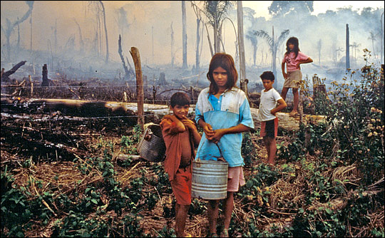

What is deforestation
The clearing of tropical forests across the Earth has been occurring on a large-scale basis for many centuries. This process is known as deforestation.Forests are an important and common feature of the Earth’s land cover, covering 31 percent of the total land surface. Tropical forests of all varieties are disappearing rapidly by human activity. Humans clear the natural landscape to make room for farms and pastures, to harvest timber, pulp, and to build roads and houses. Other causes of deforestation may include drought, forest fires, and climate change. Although deforestation meets some human needs, it also causes major problems, including social conflict, the extinction of plants and animals, and climate change.
Greatly accelerated by human activities since 1960, deforestation has been negatively affecting. The UN’s Food and Agriculture Organization estimates the annual rate of deforestation to be around 1.3 million km2 per decade. The loss of tropical rain forests is more dangerous than the destruction of beautiful areas. If the current rate of deforestation continues, the world's rain forests will vanish within 100 years causing unknown effects on the global climate and eliminating the majority of plant and animal species on the planet. so, our world going to be dying earth.
The removal of trees without sufficient reforestation has resulted in habitat damage, biodiversity loss, and aridity. It has adverse impacts on the biosequestration of atmospheric carbon dioxide.
Deforested regions typically incur significant adverse soil erosion and frequently degrade into wasteland. Disregard of ascribed value, lax forest management, and deficient environmental laws are some of the factors that lead to large-scale deforestation.
Deforestation causes extinction, changes to climatic conditions, desertification, and displacement of populations, as observed by current conditions and in the past through the fossil record.
More than half of all plant and land animal species in the world live in tropical forests. Between 2000 and 2012, 2.3 million square kilometers (890,000 sq mi) of forests around the world were cut down. As a result of deforestation, only 6.2 million square kilometers (2.4 million square miles) remain of the original 16 million square kilometers (6 million square miles) of forest that formerly covered the Earth. An area the size of a football pitch is cleared from the Amazon rainforest every minute, with 136 million acres (55 million hectares) of rainforest cleared for animal agriculture overall